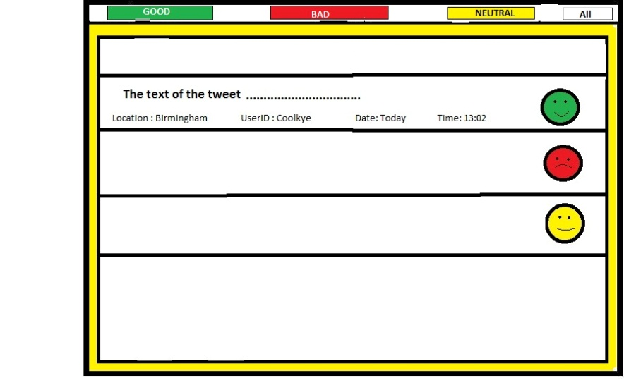

Description of prototypes
After a couple of client and team meetings, the creation of a simple prototype was decided in order to create a usable application before developing the algorithms for the final version of the application.The team decided to make the prototype ready by end of term one (December 12, 2014). This is what the prototype must include:
- 4 buttons that each represent sentimentally analysed GOOD, BAD, NEUTRAL and ALL tweets.
- These buttons shouldn't neccessarily be functional.
- Display of real-time tweets fetched from Twitter.
- Colour-coding the tweets that are fetched from Twitter.
- An elegant and user-friendly UI design that respects Norman's principles.
- Use of PHP to develop the end of term prototype.
|

|
The final application should include the following:
- 4 buttons that each represent sentimentally analysed GOOD, BAD, NEUTRAL and ALL tweets.
- These buttons must be fully functional.
- Display of real-time tweets fetched from Twitter along with username, location and date of the tweets.
- Searching capability on the basis of date, location and keywords.
- An elegant and user-friendly UI design that respects Norman’s principles.
- An algorithm to perform the sentiment analysis.
- Use of Django to develop the application.
|

|